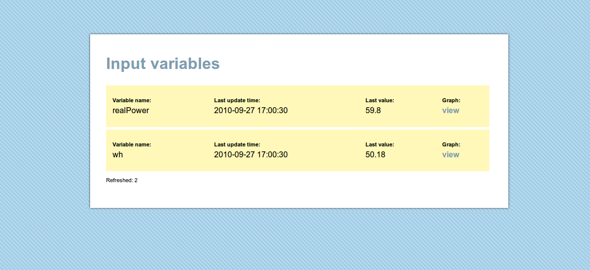

Web Logging and Graphing
First draft created: 27th September 2010
by Trystan Lea
Note: new version of emoncms (v2) can be found here: http://openenergymonitor.org/emon/emoncms
This is a mini guide on how to create a web connected energy monitor and starts from where the guide for building the non-invasive mains AC v3 energy monitor leaves off.
...
JSON and automatic website setup
One of the main features of this implementation is the use of JSON to send data from the arduino to the website. Sending data in a JSON is really nice, I wont go into it in detail here but it makes it possible for the website to automatically setup variables. A simple JSON string looks like this:
{"Voltage":"240.0"}
The website recieves this and if it doesn't already have a Voltage table, will create one and enter the value into the table. This means you can almost configure the website from the arduino, if you want to graph more variables just send them from the arduino and the website should take care of it self.
...
Arduino side
1) Download:
Arduino Sketch (Nuelectronics shield): emonEthernet.tar.gz
Browse software in repository : software repository
2) Open the sketch
- enter energy monitor calibration values as in mains AC v3 guide
- enter arduino ip, gateway ip and server ip
3) Upload the sketch to the arduino
Server side
At the moment this is more of a tech demo than a fully fledged graphing and logging website, Were working on a larger site, more information to come. But for those of you who are learning to program php, ajax, jquery (like me) this might be useful, its also super easy to setup if your not an avid programmer:
1) download: emoncms01.zip
Browse software in repository : software repository
2) unzip into your server directory (can be web based or local computer, search for LAMP server installation guides)
3) Create a database (I use phpmyadmin)
4) Enter the database name, username, password and host into database.config in the emoncms directory
5) Load emoncms in your browser, if you see the following then congratulations! your ready to log and graph! :)

You can at this point try the example data posting link, to see how sending a json string automatically sets up variables on the website.
Or if your energy monitoring arduino is all ready to go and pointing at the website, fire it up and you should see the following variables appear automatically updated in real-time :)

To see a graph of the variable click on Graph:view:

The graphs also update in real-time, using ajax and jquery.
There we are for now, more to come soon!
May be useful to understand how the above works:
Using JQuery AJAX and php to fetch data from a mysql database
Re: emoncms
Hello arena, what is the error you are getting? the code above should work with Andrew Lindsays library here: http://blog.thiseldo.co.uk/?p=504 You may need to change the capitals on the start of the file includes?
Let me know if you get any luck
Trystan
Re: emoncms
it works!!
thank you very much!!